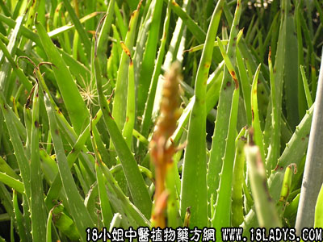

古籍名：奴会《开宝本草》。
别名：奴会、草芦荟、油葱。
植物民：芦荟。
生长环境：本品为多年生草本。喜长于干燥土壤上；通常为盆栽或生于垟头上。为一种耐干旱植物。
分布：广东各地有栽培。
入药部分：根。
采集期：全年。
自采地点：家种。
性味：性微凉、味甘淡。
功能：止咳、止血。
主治、用量和用法：1、小便刺痛：用生根1～2两，猪瘦肉适量，清水适量；2、血淋：用法同上。
附录：（花）治劳伤咳血：用干花3～5钱，猪瘦肉适量，清水煎服。（叶）1、治热毒疮：用鲜叶适量，捣烂外敷患处。2、治烂肉：用鲜叶煨热，剖开成片，温敷患处。3、汤火伤：用法同上。4、治脚枕：用法同上。